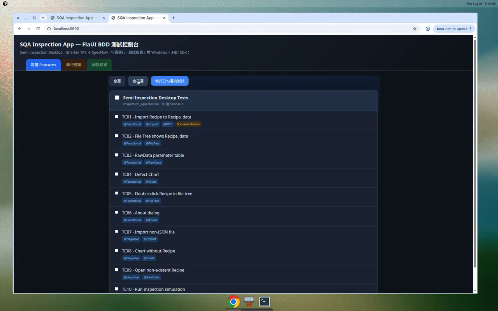

導言與適用對象
本章是企業導入 FlaUI 桌面自動化測試的完整教學文件，內容參考 FlaUI 官方專案與其教學資源， 並對照本專案（SQA Inspection App）真實程式碼，提供實際案例流程、操作截圖、流程圖與導入指引。
- 理解 FlaUI 與 UI Automation（UIA2 / UIA3）的核心概念與運作原理。
- 看懂本專案的企業級分層架構：Feature → Steps → PageObjects → FlaUI → 被測程式。
- 掌握元素定位策略與 FlaUInspect 工具的使用。
- 透過 TC01 匯入 Recipe 等真實案例，逐步了解一支測試從撰寫到執行的完整流程。
- 建立報告、截圖證據、疑難排解與 CI 導入的企業實務。
| 讀者角色 | 建議閱讀重點 |
|---|---|
| 測試員 / QA | 導言、實際案例流程、執行方式、報告解讀 |
| 自動化工程師 | 核心概念、專案架構、測試生命週期、元素定位、最佳實務 |
| 主管 / 導入負責人 | 導言、專案架構、執行方式、CI 導入與最佳實務 |
一、FlaUI 核心概念
FlaUI（Framework for Automated UI testing）是一套開源的 .NET UI 自動化函式庫， 在 Microsoft 原生 UI Automation（UIA） API 之上提供乾淨、現代的封裝， 可自動化 Win32、WinForms、WPF、UWP 等 Windows 桌面應用程式。
UIA2 vs UIA3
| 版本 | NuGet 套件 | 適用 | 備註 |
|---|---|---|---|
| UIA2 | FlaUI.UIA2 | 較舊的 Windows 應用 | Managed-only；對 WPF / Store App 支援較弱 |
| UIA3 | FlaUI.UIA3 | 現代應用（Win10+） | 建議採用；本專案即使用 UIA3 |
BasePage 內混用了多種讀值策略（Value / Text / LegacyIAccessible Pattern 與原生
WM_GETTEXT）以提高穩定度，詳見「元素定位策略」。
官方最小範例（啟動 Notepad）
FlaUI 的進入點通常是「應用程式」或「桌面」，取得一個 AutomationElement（例如主視窗）後，再往下尋找子元素並互動：
五個必懂物件
| 概念 | 說明 | 本專案對應 |
|---|---|---|
Application | 啟動 / 附加 / 關閉被測程式 | TestHooks.LaunchApplication() |
UIA3Automation | UIA 自動化引擎（進入點） | TestHooks._automation |
AutomationElement | 畫面上的任一控制項 | 各 PageObject 內尋得的按鈕 / 表格 / 樹 |
ConditionFactory (cf) | 查詢條件：ByAutomationId / ByName / ByClassName | BasePage.FindByAutomationId() 等 |
Patterns | 控制模式：Invoke、Value、Text… | BasePage.Click() / ReadText() |
Sleep 當作唯一等待，
應使用 FlaUI 的 Retry.WhileNull(...) 輪詢直到元素出現。本專案所有尋找方法都以 Retry.WhileNull 實作。
二、企業級專案架構
本平台採用 BDD 分層架構：規格（人可讀）與實作（電腦可執行）分離，可維護性高、可由不同角色協作。
技術棧
目錄對照
三、測試生命週期（SpecFlow Hooks）
本專案在 TestHooks.cs
以 SpecFlow Hook 控制每一支測試的完整生命週期，並在每一步驟自動截圖、寫入報告。
啟動與尋窗（真實程式碼）
@... the application has relaunched 步驟會呼叫 RelaunchApplication() 重置狀態（TC01、TC08 使用）。
四、元素定位策略與 FlaUInspect
UI 自動化最難的是「穩定地找到元素」。本專案採用多層後援策略，優先用最穩定的
AutomationId，逐級退回到 Name、模糊比對，最後才用鍵盤快捷鍵。
被測程式元素對照表（Element Map）
下表整理本專案實際使用的 AutomationId 與對應快捷鍵，撰寫 / 修復測試時可直接查閱：
| 功能 | AutomationId | 快捷鍵 | 用於 |
|---|---|---|---|
| Import Recipe | btnImportRecipe | Ctrl+I | TC01、TC07 |
| RawData | btnParameters | Ctrl+E | TC01、TC03、TC04、TC10 |
| Defect Chart | btnDefectChart | Ctrl+D | TC04、TC08 |
| Run Inspection | btnRunInspection | Ctrl+R | TC10 |
| About | btnToolbar0About / menuToolsAbout | F10 導航 | TC06 |
| 檔案樹 | treeFiles（SysTreeView32） | — | TC02、TC05 |
| 參數表格 | dataGridParameters | — | TC01、TC03、TC05 |
| 工具記錄 | txtToolLog / lblToolPlugin | — | 各 log 斷言 |
用 FlaUInspect 找出 AutomationId
FlaUInspect 是 FlaUI 官方的視覺化檢查工具（類似 Windows 的 Inspect.exe），可即時檢視應用程式的 UIA 元素樹與屬性。
- 在 Windows 上執行安裝：
tools\install-flauinspect.ps1（詳見 tools/README.md），或由main_menu.bat選 [15]。 - 啟動後選擇 UIA3 模式（本專案採用）。
- 啟動被測程式，於 FlaUInspect 中懸停 / 點選目標控制項。
- 在右側屬性面板讀取
AutomationId、Name、ControlType、ClassName。 - 把
AutomationId填回對應的 PageObject。
五、實際案例流程：TC01 匯入 Recipe
以最具代表性的 FunctionalTC01 — Import Recipe to Recipe_data 示範一支測試從規格 → 場景 → 步驟 → 頁面物件 → 斷言的完整鏈路。
① Feature（場景與資料）
② StepDefinitions（只編排 + 斷言）
③ PageObject（真正的 FlaUI 操作）
reports/ 產生 HTML 報告，
每個步驟附上操作截圖，並在參數表格中比對到 Layer1_AOI_Recipe_v1 等關鍵字即判定 Pass。
負面案例：TC07 匯入非 JSON 檔
Negative驗證異常情況也要正確處理：匯入 _invalid_sample.txt 應顯示警告，
且不可把無效檔複製成 TC01_import_copy.json。
六、10 個測試案例導覽
本平台涵蓋 7 個功能與 3 個負面案例，完整對照見 TPS.md。
| ID | 類別 | 驗證重點 | 關鍵操作 |
|---|---|---|---|
| TC01 | 功能 | 匯入 Recipe 並於 RawData 顯示參數 | Import → 選檔 → RawData |
| TC02 | 功能 | 檔案樹指向 Recipe_data、標題正確 | 檢視 treeFiles |
| TC03 | 功能 | RawData 切換並載入參數表 | RawData (Ctrl+E) |
| TC04 | 功能 | 缺陷圖表繪製（5 種缺陷） | RawData → Defect Chart |
| TC05 | 功能 | 由檔案樹雙擊開啟 Recipe | 雙擊樹節點 |
| TC06 | 功能 | About 對話框顯示 | About (F10 導航) |
| TC07 | 負面 | 匯入非 JSON 顯示警告且不複製 | Import 無效檔 |
| TC08 | 負面 | 未載入 Recipe 時圖表不崩潰 | relaunch → Defect Chart |
| TC09 | 負面 | 開啟不存在檔案顯示錯誤且不崩潰 | RawData → 選不存在檔 |
| TC10 | 功能 | 模擬 AOI 檢測並寫入 log | RawData → Run Inspection |
七、操作方式與操作截圖
三種執行方式，任選其一。Web 測試控制台是最直覺的企業入口（勾選 → 執行 → 看報告）。
方式一：CLI 一鍵
方式二：Web 測試控制台（port 6690）
啟動 啟動測試平台.bat
後開啟 http://localhost:6690/：
勾選要跑的 TC → 執行 → 即時進度 → HTML 報告。

Inspection_App.feature，
列出 TC01–TC10 及其標籤（@Functional / @Negative / @Import…），可個別勾選。dotnet test --filter，並顯示即時進度與通過率。方式三：主選單
雙擊 main_menu.bat，
選 [1] 全部測試、[2] 單一測試、[3] Web 控制台、[15] FlaUInspect。
八、報告與截圖證據
每次執行都會產出可稽核的證據，適合企業品質報告與缺陷追蹤：
| 產出 | 路徑 | 用途 |
|---|---|---|
| ExtentReports HTML | reports/SemiInspectionTestReport.html | 互動式報告，含每步驟截圖 |
| 結果報告 | reports/TestResultReport.html | 總覽通過率與案例明細 |
| JUnit XML | reports/junit-results.xml | CI 整合（Jenkins / GitLab / Azure） |
| 操作截圖 | bin/Release/net8.0-windows/Screenshots/ | 每次點擊與步驟結束自動擷取 |
九、疑難排解與企業最佳實務
| 症狀 | 可能原因 | 建議做法 |
|---|---|---|
| 找不到元素 | AutomationId 改變 / 尚未渲染 | 用 FlaUInspect 重新確認；改用 Retry.WhileNull 加大逾時 |
| 時好時壞（flaky） | 固定 Sleep 太短、時序競態 | 以輪詢取代固定等待；操作後加入穩定點檢查 |
| 點擊無效 | Invoke Pattern 不支援 | 本專案已後援座標點擊（ClickByBounds） |
| 讀不到文字 | WinForms 控制項不支援 Value Pattern | 本專案後援 WM_GETTEXT / LegacyIAccessible |
| NETSDK1136 | 目標框架非 Windows | 維持 net8.0-windows 與 EnableWindowsTargeting |
| 進程殘留 | 前次測試未關閉 | 本專案 CloseApplication() 會收尾殺進程；必要時手動清理 |
導入建議
- 先跑一支就好：導入時先讓 TC01 綠燈，再逐步擴充。
- 穩定優先：優先用
AutomationId；避免用畫面座標與固定Sleep。 - 分層守則：Step 不寫 FlaUI；FlaUI 操作一律進 PageObject。
- CI 整合：以 JUnit XML 串接 CI；Runner 需 Windows（可用互動式桌面 session 讓 UIA 正常運作）。
- 每次獨立：每個 Scenario 啟動 / 關閉自成一環，避免狀態污染。
十、參考資料
- FlaUI 官方專案：github.com/FlaUI/FlaUI
- FlaUInspect（元素檢查工具）：github.com/FlaUI/FlaUInspect · 本專案安裝說明 tools/README.md
- SpecFlow（BDD for .NET）、NUnit（測試框架）、ExtentReports（報告）
- 本手冊其他章節： 1. TPS→BDD · 2. 修改 BDD · 3. 執行測試 · 4. 修復測試 · 5. 讀取報告